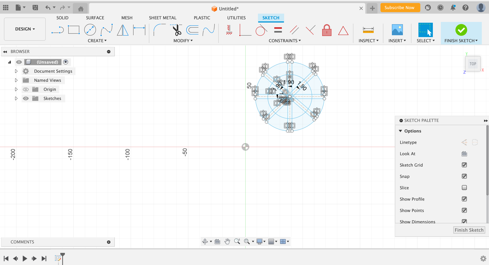
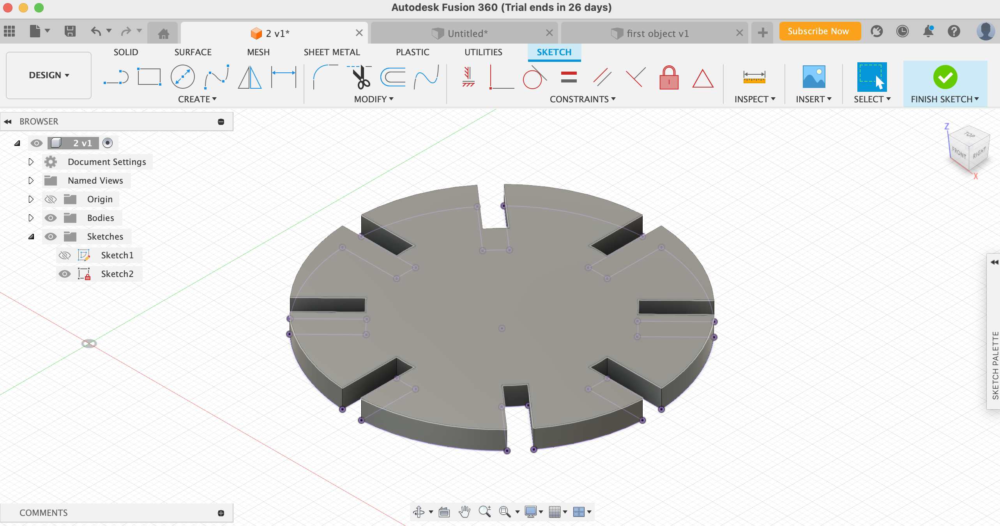
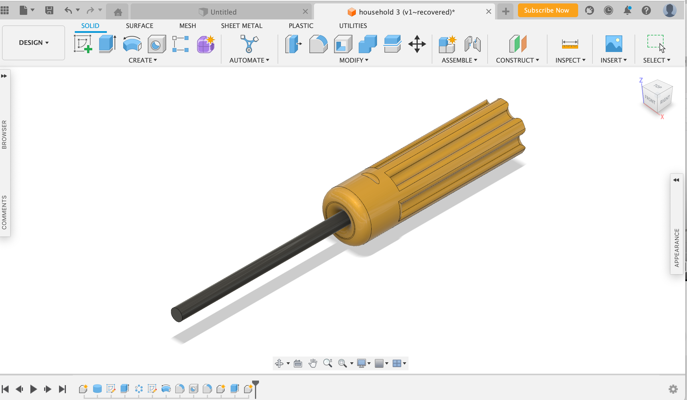

<br>
#### Week 2: 2D Cutting
<h4 style="font-size:30px;background-color:lightpink; color:white; font-family: helvetica"> 1ST ASSIGNMENT</h4>
For this week's assignment we had to create press fit construction kit that could be able to be assembled in different ways so that we could then send it to a laser cut. It had to be done so that the pieces could be stay together, but not glue or other material could be used to put them together.
<h4> - Step 1 | Learn How to Use Fusion 360 </h4>
Before I coul start, I needed to watch several tutorials in youtube to learn a brief introduction on how to use fusion 360, where the tools are located, and different techiques that I would need to implement in my design. For that, I started by doing a simple shape provided in an example. Once i felt confidence, I began to sketch my project.
<h4> - Step 2 | Design the Model </h4>
I decided to do a sort of wheel with eight notches of about 1.90mm. The first thing I did was to create a sketch by selecting the skecth button. Then, my xy plane, which was the top and draw a cricle with a diameter of 50mm. Afterwards, I divided my square into eight evenly distribuited pieces by creating construction lines along the by pressing "L" in the keyboard. Once I had this, I offlinned by 1.9 mm and mirror them. Finally, I select " finish sketch" and extrude them by pressing letter "E" in the keyboard. I selected the parts I wanted to print and extruded them by using the thickness of the cardboard, which was the material I will be using, being 3.8mm. Then saved it as a dfx by clicking on the "sketch tab" and put it in a USB to upload it into the lasercut.


<h4> - Step 3 | Cutting </h4>
The lasecuter was not difficult to use, and basically decided to do 10 pieces.
<img width="400" height= "300" align-items="center" src="./laser.PNG" alt="laserin"/>
<h4> Final Result </h4>
For the final results, I think that it definetely wwent as expected, as it not only was able to assembled in multiple ways, but also fit perfectly one with each other. Below, I have attached a picture of the final resultassembled in two different ways.
<img width="400" height= "300" align-items="center" src="./assembly.PNG" alt="assembly"/>
<h4 style="font-size:30px;background-color:lightpink; color:white; font-family: helvetica"> 2ND ASSIGNMENT</h4>
For this next assignment, we had to chooe two objects from the lab and model them in Fusion 360.
<h4> - first object </h4>
So, for my first object I decided to model a screwdriver. I started by doing the body in the form of a cylinder, and then continue on to create the holder and eventually the screw. My screw driver was 5.5mmm. Below, I have attached a picture of how it is simmulated.

<h4> - second object </h4>
For this second object, I did a model of a water bottle. I began by making circles and then filleting the bottom part of the water bottle and then created a hole in the top part as representing it was open. Then, I added some decorative elements such as giving a sense of glass of color gold and black. Below, I have attached a picture of how it is simmulated.
<img width="400" height= "300" align-items="center" src="./water bottle.png" alt="second object"/>